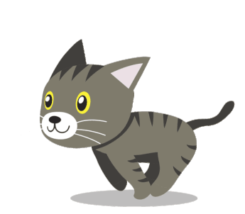

Pita Tracker 1.0
+ Blood
+ Insulin
+ Food
Date
Time of Measurement
Blood Glucose (mg/dL)
Temperature (F)
Submit
Cancel
Date
Time of Measurement
Insulin Dose (u)
Submit
Cancel
Date
Time of Measurement
Food Amount (cups)
Submit
Cancel
Today's Entries
Type
Date
Time
Amount